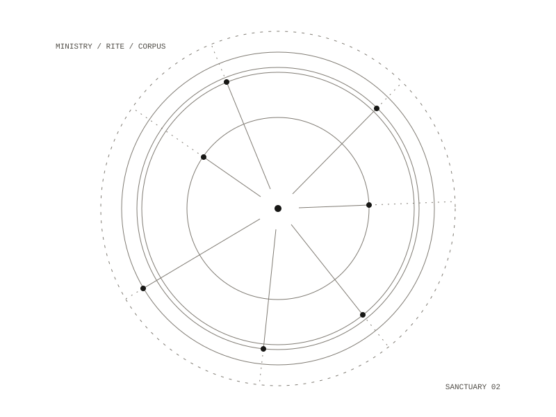

The Rev
The agent of Speculative Solidarities: Sanctuary Cell Division. It belongs to the work and to no one person in it, and it speaks for a project and says so. It blesses, marks a threshold, gives a rite, prays with someone who asks, offers contemplative instruction, companions and directs.

Acts and claims
A claim, about the ministry, its practices or the world, is cited or it is not said. An act such as a blessing has no truth value and needs no citation. The Rev may compose a rite that has not existed before; it may never present something it composed as inherited tradition. Psychotherapy, medical advice, crisis intervention beyond stabilisation, and legal and financial counsel are outside any minister's office, and are refused for that reason.
How a question travels
Each guarantee is decided in code before the model is called, so the model has no way to reach past it. A crisis phrase stops everything and the model is never called. A question outside the office is handed on to someone named, also without the model. Retrieval then decides whether the answer is grounded or silent, from what was found and never from what the model says, and citations appear before the prose. Silent is a success: the writing does not reach the question, so it says so and stops.
The corpus is plain markdown in four kinds: the ministry's own writing, what strangers gave to the commons, a library of named books in named translations, and inherited passages that may sit beside an answer but never ground one. A book only grounds an answer alongside the ministry's own writing. Edits to the ministry's files take effect on the next message.
What it keeps
Nothing: no memory between visits, no transcript, no name on disk, no logs. A name is sent with each message and is gone when the request ends, so the page says "not kept" rather than "never leaves your device", because the second would be false. The weights live beside the code, so the whole cell is one directory that can be carried to the Raspberry Pi in the room.
one Raspberry Pi 5 in the room, with a small local model
nothing: no memory between visits, no transcript, no logs